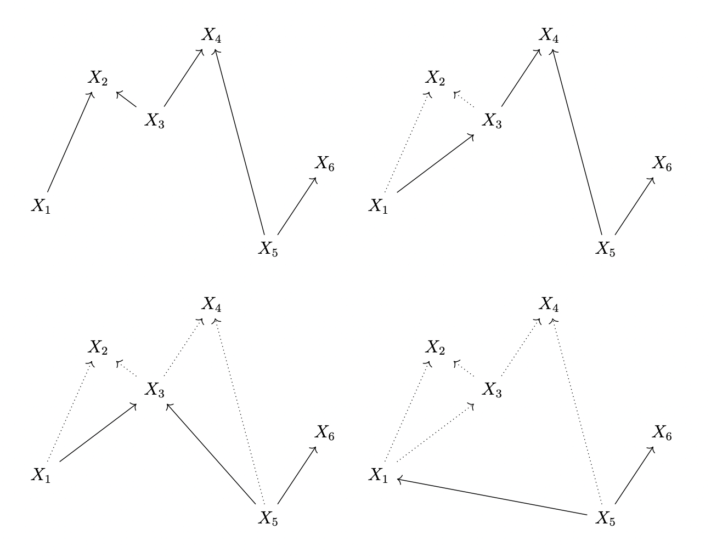

Research summary
I work at the boundary between logic, algebraic geometry, and computation. A recurring theme is that computation has geometry: normalization and cut-elimination can be represented as algebraic operations (ideals, Gröbner bases, schemes) and—via singular learning theory—as local geometry near critical points.
I’m particularly interested in how this perspective can inform AI safety: interpretability as structural inference, model selection for singular models, and understanding when two systems that compute the same function nonetheless have meaningfully different internal structure.
A romantic image comes to mind: as one performs deductive reasoning, a kind of geometric hologram appears overhead, structures blooming in harmonic alignment with the logic, or else the contrary.
{kind=link}

Core interests
- Linear logic, proof nets, cut-elimination
- Algebraic geometry (Hilbert schemes; schemes and singularities)
- Type theory (programs-as-proofs viewpoints)
- Categorical logic and internal languages
- Computability and denotational semantics
- Singular learning theory (SLT)
- Quantum error correction (via logical/semantic viewpoints)
Adjacent interests & practice
- Mathematical musicology; mathematical aesthetics
- Perspective/projective geometry
- Foundations of mathematics; philosophy of mathematics; philosophy of science
- Quantum computing
- Formal verification
- Mathematical communication; storytelling as a research tool
- Generative/algorithmic art; audio‑visual performance
Experience
- Research focus: singular learning theory, geometry of computation, and implications for AI safety (model selection, structural inference, interpretability).
- Employment administered via EOR arrangements (Deel Australia Services Pty Ltd; later Justworks Global Ventures Australia Pty Ltd), making the affiliation with Timaeus explicit.
Education
- Thesis: Algebraic Geometry and Linear Logic • PDF
- Supervisors: Daniel Murfet; Thomas Seiller (USPN)
- Thesis: Simplicial Sets are Algorithms • PDF
- Supervisor: Daniel Murfet
Publications & research writing
Peer‑reviewed / accepted
Conference
Preprints (submitted to MSCS)
Other research writing
Selected talks & lecture series
- 18 Feb 2025 — ART Seminar, University of Melbourne: Patterns of Thought: A Philosophical Journey Through Mathematics and Music (seminar page).
- 30 Mar 2023 — CHoCoLa (ENS Lyon): Computation in logic as the splitting of idempotents in algebraic geometry; two models of multiplicative linear logic (slides).
- Nov 2023 — Derivatives in Logic and Learning (bonus seminar on Differential Linear Logic).
Seminar links (full index)
Metauni: Anything at all seminar
- Story telling (in mathematics and music) — video, notes, synopsis/transcript
- An object is whole only with its contrary; composing music and creating mathematics — video, synopsis/transcript
Metauni: Foundations (videos)
- First order logic — video
- Models of first order theories — video
- Gödel (Part 1) — video
- Gödel (Part 2) — video
- Gödel (Part 3) — video
- Gödel (Part 4) — video
- Gödel (Part 5) — video
- Gödel (Part 6) — video
- Ax–Grothendieck (Part 1) — video
- Ax–Grothendieck (Part 2) — video
- Ax–Grothendieck (Part 3) — video
- Ax–Grothendieck (Part 4) — video
- Ax–Grothendieck (Part 5) — video
Other seminars
- Axe Complexités (2022) — Quantum error correcting codes and cut‑elimination — video (scroll down)
- Institut de Mathématiques de Marseille, Logic and Interactions (2022) — Proofs, rings, and ideals — slides
- Computation, Geometry, Logic (2021) — Proof nets (video), Sequentialisation (video), GoI0 (video)
- Melbourne Haskell Group (2020) — Gentzen–Mints–Zucker duality — video
- Topological Quantum Computing (2019) — Reversible Turing Machines (notes); Simplicial cohomology with Z/2 (notes)
- Graduate Topology Seminar (2019) — Arithmetisation and localisation (notes)
- Topos Theory and Categorical Logic (2018) — Monads and programs; Higher‑order logic and topoi; Classifying space of rings
- DST Seminar (2017) — Monads and Programs (slides)
- Curry–Howard Correspondence (2016) — Church–Rosser (notes), improved notes; intro λ‑calculus (notes); System F in the real world (notes)
Expository writing & essays
- Presenting mathematics (essay)
- What if I’m not good enough? (essay)
Scholarships & funding
Scholarships
- 2016 — AMSI Summer Research Scholarship (Vacation Research Scholarship), supervisor: Daniel Murfet.
- 2016 — AMSI Travel Grant.
- 2015 — University of Melbourne Vacation Research Scholarship, supervisor: Peter Forrester.
Grants / funding context
- ARC-funded postgraduate research position (University of Melbourne), 2024 – Jul 2025.
- ARIA (UK) — Mathematics for Safe AI: grant held by Timaeus; I was hired under this award as Research Scientist (Theory).
Notes
A small index of notes hosted on this site.
- Commutative Algebra
- Hartshorne Solutions
- Varieties
- Arithmetisation and Interaction
- Approximation of Continuous Functions by ReLU Nets
- Church–Rosser Theorem
- Commutative Algebra (with Lin)
- First Incompleteness Theorem
- Quantum Computing
- Nobby
- Predicate Logic
- Reversible Computation
- Secondary Commutative Algebra
- Three Algorithms
- Ax–Grothendieck